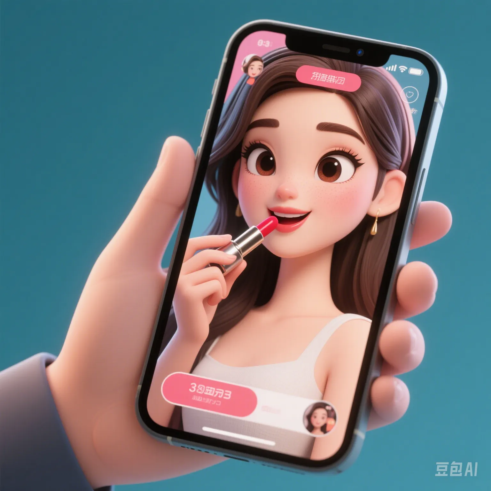

Live Shopping vs Physical Stores: Why Are Young People Addicted to Shopping Sprees?
PeaceLove.Top Insights :2025-04-17
The Rise of Live Shopping 📱
In recent years, live shopping has emerged as a new consumption trend in China 🎥, and more and more young people are getting addicted to it. Many even regard it as the mainstream way of shopping. Compared with traditional physical - store shopping, live shopping not only allows consumers to interact in real - time through "online live broadcasts" but also offers various exclusive discounts and time - limited promotions 💸.
Through various e - commerce platforms (such as Taobao, Douyin, Kuaishou, etc.), consumers can quickly place orders to buy products in the form of short videos and live - stream sales 🛍️. Live - stream sales are not just simple product displays. They combine entertainment and immediacy, which makes consumers have a strong desire to buy while watching 🤩.
Why Do Young People Prefer Live Shopping? 💡
1. Instant Gratification and Entertaining Experience
One of the greatest charms of live shopping is its immediacy 🎯. Consumers can see product demonstrations, user reviews, and promotional information within just a few minutes. This rapid information feedback makes the shopping experience more intuitive and real. Moreover, live broadcasts often combine entertainment, such as through funny hosts or interactive games, which makes the whole shopping process full of fun 🎉.
2. Personalized Recommendations and Social Interaction
Compared with traditional shopping, live shopping often pays more attention to the user experience. Hosts recommend products based on real - time interactions with the audience and even make precise recommendations according to personal interests. Young people like this personalized and demand - oriented shopping method 💬. The interaction with hosts and other viewers also enhances sociality and a sense of belonging 👫.
3. The Stimulation of 'Flash Sales' and Time - Limited Discounts
Live shopping often uses means such as time - limited discounts and flash sales to stimulate young people's desire to buy ⏳. While watching the live broadcast, if a favorite product suddenly offers a discount or a free gift, young people often make impulsive purchases due to the short - term pressure to buy 🛒. This kind of 'flash - sale' atmosphere invisibly increases the desire to shop.
The Differences between Live Shopping and Physical Stores 📊
Although live shopping is very popular, it doesn't mean that the charm of physical - store shopping has completely disappeared ❌. There are obvious differences between the two:
1. On - site Experience
The biggest advantage of physical stores is the on - site experience. Consumers can directly touch and try products. Especially for large - item products such as clothing and household appliances, consumers tend to prefer the actual experience. For example, trying on clothes or experiencing the comfort of furniture, which live shopping cannot provide this kind of intuitive feeling 🧥.
2. The Ritual of the Shopping Process
Many consumers still enjoy the shopping experience in physical stores, including window - shopping, shopping with friends, and communicating with salesclerks. For many people, window - shopping is not just about shopping but also a way of socializing and relaxing 👗.
3. After - sales Service and Guarantee
When shopping in physical stores, customers can directly communicate with salesclerks to solve product problems or return and exchange products. The after - sales service is relatively faster and more direct. In contrast, the after - sales guarantee of live shopping often depends on the platform's customer service, and the return and exchange process is relatively cumbersome and less direct ⚖️.
Behind Young People's Addiction to Shopping Sprees 🧠
1. The Influence of Social Media on Consumption Behavior
Young people can't live without social media. Their shopping decisions are often influenced by their social circles, the influence of internet celebrities, and even celebrity endorsements 📲. Live shopping strengthens the desire to consume through this social effect and has even become a cultural phenomenon, making many people gradually lose themselves in "shopping sprees".
2. The Fast - paced Lifestyle
Modern people face great work and life pressure ⏰. Young people are more inclined to seek instant gratification through online live broadcasts. In this fast - paced life, immediacy and excitement have become their core needs for shopping, and live shopping just provides this 🎮.
3. The Change of Consumption Culture
As the post - 2000s and Generation Z gradually become the main consumers, they pay more attention to the interactivity and entertainment in the shopping process. Traditional physical - store shopping may seem boring and outdated to them 🛍️. Live shopping allows them to shop while having fun, gradually forming a new consumption culture 🎬.
Conclusion: Which Will Dominate, Physical Stores or Live Shopping? 🏆
Although live shopping is on the rise, it won't completely replace the role of physical stores. They have different consumption scenarios and customer needs, and may form a complementary relationship in the future. For young people, live shopping offers convenience, entertainment, and instant gratification, while physical stores continue to attract consumers with their real - life experience and social interaction 🛍️.
In this process, how merchants can make use of the advantages of both to provide a more comprehensive and personalized shopping experience will be the key to future business competition 💡.